| Step | 這一章在做什麼 |
|---|---|
| step0 | 課程說明、前置檢查 |
| step1 | 為什麼要 harness（有／沒有 harness 產出對比） |
| step2 | CRUD 快速完工秘笈（跑範本 → 玩一輪 → 8 核心檔 → harness 四件 → Design System） |
| step3 | 複製範本開發新模組（PRD → AI 生成 → 反覆修正）重頭戲 |
| step4 | LOOP 工程（改→驗→再改）＋ E2E 功能驗證＋失敗截圖診斷 ＋ 雙 AI 對抗審查 |
| step5 | 課程總結、回去怎麼用 |
課程說明與前置檢查
- 知道這門課要教什麼、怎麼進行。
- 確認機器準備好了（10 項檢查，名稱與腳本印出的完全一致：Node.js >= 20、pnpm 已安裝、git 已安裝、port 3100 未被占用、磁碟剩餘空間 >= 2GB、ExecutionPolicy 可執行腳本、工作區可寫入、npm registry 連線、Playwright Chromium 已快取（step4 自動化瀏覽器測試要用的瀏覽器核心，沒快取會自動下載，所以只算
[WARN]）、AI Agent CLI）。 - 紅燈（
[FAIL]）時，知道怎麼讓 AI 幫你把環境修好，而不是卡在那裡等人。
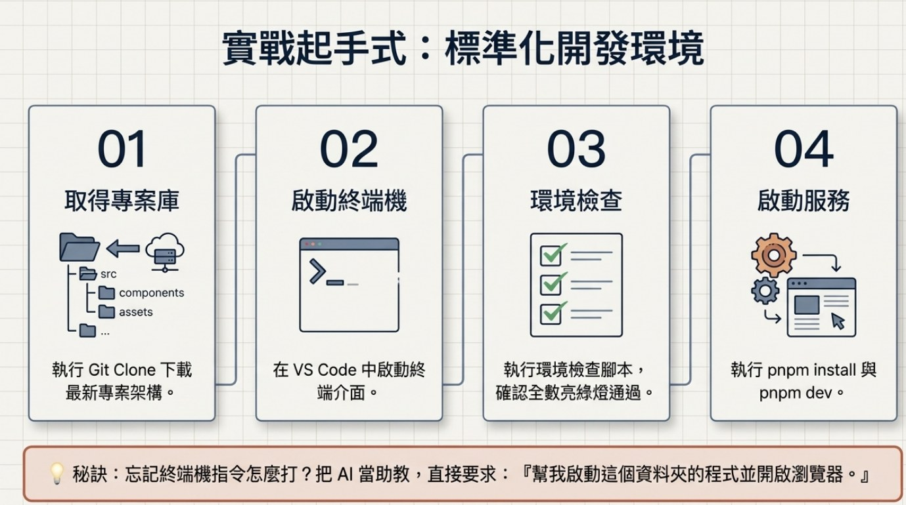
pnpm install 與 pnpm dev 是 step2 才做。不熟終端機也沒關係：把 AI 當助教，直接跟它說「幫我打開這個資料夾並執行這支腳本」。先把教材整包抓下來，再跑前置檢查：
# Windows（PowerShell）｜先切到你要放教材的資料夾，例如 cd D:\
git clone https://github.com/xian711/AI_CRUD_Workshop_Frontend_EASY.git
cd AI_CRUD_Workshop_Frontend_EASY\step0_course_intro
.\preflight.ps1# macOS／Linux（終端機）｜先切到你要放教材的資料夾，例如 cd ~/
git clone https://github.com/xian711/AI_CRUD_Workshop_Frontend_EASY.git
cd AI_CRUD_Workshop_Frontend_EASY/step0_course_intro
bash preflight.sh看到「前置檢查全數通過，可以開課！」再進 step1。若結尾是「前置檢查全數通過（含 N 項警告），可以開課！」也一樣可以開課——[WARN] 不擋開課（乾淨機器最常見的是 Playwright Chromium 尚未快取）。只有 [FAIL] 一定要處理掉，做法看下面「看到 [FAIL] 紅燈怎麼辦」。
三步走：照腳本印的「修復提示」做一次 → 關掉終端機重開一個再跑 preflight（剛裝好的 Node／pnpm／git 在舊視窗抓不到，這是最常見的假紅燈）→ 還是紅，把整份輸出貼給 AI Agent（連 [PASS] 的行一起貼）：
這是工作坊環境前置檢查（step0_course_intro\preflight.ps1）的完整輸出，我用 Windows 11。
請說明每個 [FAIL] 的原因、給我可複製的修復指令，修完帶我重跑一次；不要改工作坊裡的任何檔案。
（把整份 preflight 輸出貼在這裡）為什麼要有 harness？
- 用「同一句需求、只差有沒有附規矩」的兩個產出，親眼看出差別。
- 知道差別不在美醜，在「每個決定有沒有出處」。
- 知道 harness 管得住什麼、管不住什麼。
harness 就是你交給 AI 的一套「規矩」：專案規則（CODE-RULES）＋設計系統（色票、間距）＋標準範本。沒有它，AI 每次都會自己決定；有了它，AI 照你們的決定做。注意：現在的 AI 不給規矩也寫得出漂亮頁面——所以這一步不是在比誰好看。
下面兩張圖，是拿同一句需求、只差有沒有附規矩，各跑一次的產出。兩版都很好看，新增與刪除也都能用——這就是最重要的體會：左邊那版甚至可能比右邊更討喜（它自己配了色、加了圖示）。重點在別的地方：右邊每一個決定都有出處，左邊全是 AI 自己決定的。兩版核心功能相同，但欄位選項與驗證規則已經不一樣了（血型幾個選項、電話收不收 (02) 1234-5678），而這正是「這個決定是誰做的」的結果。
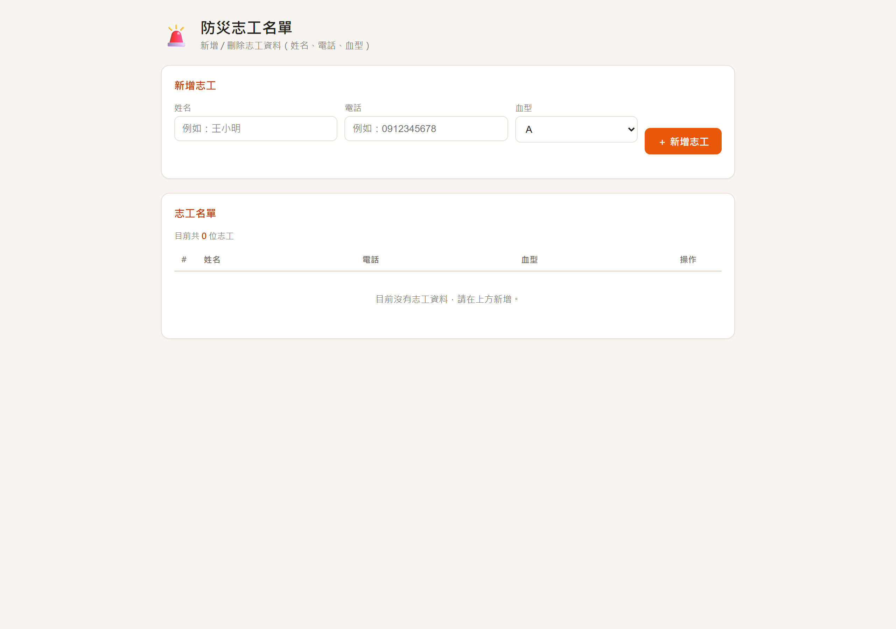
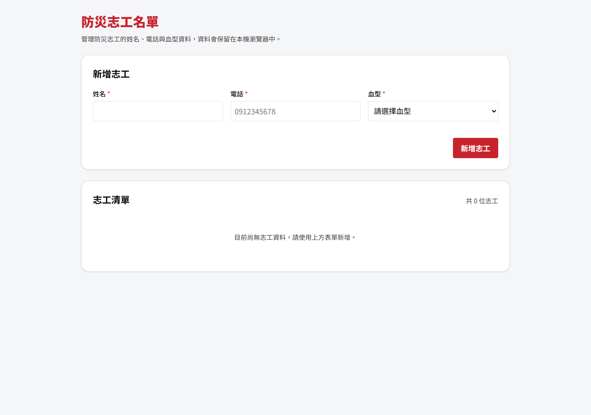
#C8232C、必填標紅星、血型固定四選一、電話只收 09 開頭 10 碼——每個決定都查得到出處。| 觀察點 | 沒 harness | 有 harness |
|---|---|---|
| 顏色｜它自己那套是對的實務，但合不進你們的系統 | ||
| 主色 | 橘色 #e8590c，AI 自己挑的 | 紅色 #C8232C，規則指定的 |
| 色票名稱 | 自己發明一套 | 照你們給的那套 |
| 品牌紅有沒有用到 | 一次都沒有 | 有 |
| 沒走色票、直接寫死的顏色 | 5 處 | 0 處 |
| 業務規則｜顏色錯了看得出來，驗證規則錯了要等資料髒掉才發現 | ||
| 電話怎麼驗 | 6～15 個字，數字、括號、空白都收 | 只收 09 開頭的 10 碼 |
輸入 (02) 1234-5678 | 會過 | 被擋 |
| 血型選項 | 5 個，多一個「不明」 | 4 個 |
| 必填星號 | 沒有 | 4 個必填欄都有 |
| 多做的｜兩邊都自己加東西——harness 管得住「怎麼寫」，管不住「做多少」 | ||
| 關掉再開，資料還在嗎 | 在（自己加的） | 在（自己加的） |
| 清單空的時候 | 有一句提示（自己加的） | 有一句提示 |
| 刪除確認 | 瀏覽器內建的小視窗 | 頁面自己做的彈窗 |
| 表格欄位 | 多一個流水號欄 | 照需求 |
| 報讀軟體用得了嗎｜看不見的人靠它把畫面唸出來。多出來的行數，一半花在這裡 | ||
| 哪一欄填錯，唸不唸得出來 | 唸不出來 | 4 個欄位都綁好了 |
| 畫面變動會不會自動唸 | 不會 | 會 |
| 表頭有沒有標明是欄標題 | 沒有 | 4 欄都有 |
| 彈窗的鍵盤操作 | 交給瀏覽器內建視窗 | 自己處理 Esc 關閉與游標歸位 |
| 規模｜行數多一倍不是囉嗦，是多做了上面那些 | ||
| 檔案行數 | 312 行 | 751 行 |
| 程式裡的名字 | volForm、blood，隨手取 | volunteer-form、blood-type-select，完整 |
CRUD 快速完工秘笈
材料收在 step2_speedrun_kit/ 的兩個資料夾裡。照 ①→⑤ 走，每一步都會點名你此刻要打開哪一份；沒被點到的文件都是「回公司想查再翻」，現在不必讀。
| 資料夾 | 是什麼 | 哪些步驟會用到 |
|---|---|---|
2.1_sample_app | 範本正本（可跑的人員 CRUD）＋規格文件＋UML 圖；harness 四件的實檔也在裡面 | ① ② ③ ④ |
2.2_design_system | Design System：token 實檔、色票與間距手冊、元件目錄 | ⑤ |
① 安裝並啟動範本
cd step2_speedrun_kit/2.1_sample_app/sample-app
pnpm install # 首次安裝依賴，順帶產生型別
pnpm dev # 啟動 dev server開瀏覽器到 http://localhost:3100/template/crud（開根網址會自動導向）。網址裡的 template 就是這個範本模組在程式裡的名字——step3 你會把它整套複製改名成 equipment，網址也跟著變成 /equipment/crud。
② 當使用者玩一輪：CRUD 五個檢查點
逐一操作，確認每個都能重現（預期畫面見下面「你應該看到」）：新增一筆 → 進檢視頁編輯 → 刪除跳二次確認 → 關鍵字＋狀態篩選後複製網址開新分頁 → 匯出 CSV。
加分兩件：編輯時清空必填欄位按儲存（看欄位下方紅字）、把視窗縮到手機寬度（看表格變卡片）。
③ 看懂範本結構：8 個核心檔
打開 2.1_sample_app/README.md，對照裡面的「8 個核心檔（複製改名 vs 直接共用）」表看一遍。判斷準則只有一句：跟「這個實體長什麼樣子」有關的 → 複製改名；通用機制 → 直接共用。這張表就是 step3 你要叫 AI 照著做的事。
④ 認識規矩：規矩放在哪、誰會去讀
你不需要讀懂裡面的每一條規則——那是寫給 AI 讀的。就像滷茶葉蛋不必知道滷包裡有幾味藥材，但你得知道滷包放在哪、什麼時候丟下去、換鍋子的時候要不要一起帶走。這一步只要弄懂三件事。
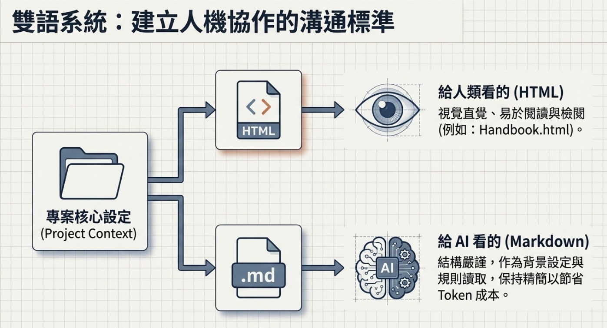
.html 給人看（像這份手冊），.md 給 AI 看（harness 四件全是）。所以「不用讀懂每一條規則」是真的——那幾份的讀者本來就不是你。「不用讀」講得更精準一點：不用逐條讀懂，不等於四份都不看。人至少要掃過CLAUDE.md（48 行，知道底線在哪）；開新模組前要讀使用說明-複製範本開發新模組.md（那份本來就是寫給人看的）；另外兩份由 AI 改碼時查、由人做 code review 時對照。
另外提醒：這個比喻只管「滷包放哪、要不要帶走」。它不負責回答「滷包裡的規矩對不對」——業務規則寫錯（例如「不能匯出個資」寫反了），AI 會照著做，錯得更快更整齊。規矩的內容要有人負責、有版本、有人審。
鍋具怎麼用？答案是你幾乎什麼都不用做：
- 滷包不用你端上桌。不管你用哪一個 AI，規矩都會被讀到——有些 Agent 一開對話就自動讀根目錄的規則檔；不會自動讀的，step3 的起手 prompt 第一句就是「先依序讀完這四份文件再動作」。你不需要做任何設定。（哪個 Agent 屬於哪一種，見
step2_speedrun_kit/README.md的對照表。） - 滷包跟著鍋子走。step3 你會把整個
sample-app複製成my-equipment-app，這四份會一起被複製過去。新模組不必重新設定，直接繼承同一套規矩。 - 要改口味就改滷包本身。全教材只有這一份實檔，沒有第二份副本，改完立刻對 AI 生效。
想看一眼滷包裡有什麼？（選配）打開CLAUDE.md掃 30 秒就好——它只有 48 行，你會看到「鎖定技術棧不准換套件、禁止硬編碼顏色、危險操作要二次確認」這類鐵律。四份的完整分工與不同 AI Agent 的載入方式，見step2_speedrun_kit/README.md的「harness 四件：給 AI 的規矩」一節。
⑤ 認識 token：Design System
用瀏覽器打開 2.2_design_system/DESIGN_SYSTEM.html 看色票與間距（開不了瀏覽器就改看同資料夾的 TOKENS_SUMMARY.md，純文字版，順帶解釋了「token 檔裡明明有 #C8232C、24px，為什麼不算硬編碼」），知道顏色／間距一律走 token、不硬編碼就夠了——這是 step1 右邊那版之所以像老手寫的原因。
這三份想查才翻，現在別花時間讀：2.1_sample_app/SPEC-範例-人員CRUD.md（需求規格：Use Cases、FR／BR／NFR、驗收清單）、2.1_sample_app/SDD-CRUD標準範本-v1.1.md（設計：檔案結構、行數預算、各檔實作規格）、2.1_sample_app/DIAGRAMS.html（7 張 UML 圖，用瀏覽器開）。它們是「回公司要交的文件長什麼樣」的樣板，不是這一節的功課。
pnpm install 或 pnpm dev 噴一大串紅字，處置跟 step0 同一套：先看訊息有沒有明講原因（最常見是 port 3100 被別的程式占用、或公司網路擋住 npm），還是不行就把終端機從你打的指令那一行開始整段複製，貼給 AI Agent——只貼最後一行紅字它判不準。可以用這個 prompt：
工作坊範本專案的 pnpm 指令失敗了，完整輸出如下，我用 Windows 11。
請說明原因、給我可複製的修復指令，修完確認 http://localhost:3100/template/crud 打得開；不要改專案裡的程式碼。
（從你輸入指令那一行開始整段貼上）同樣是兩次停損：同一個錯誤 AI 修兩次還是不行，就舉手找講師——講師手上有預先打包好的 node_modules 離線包，不會讓你卡在安裝這一關。
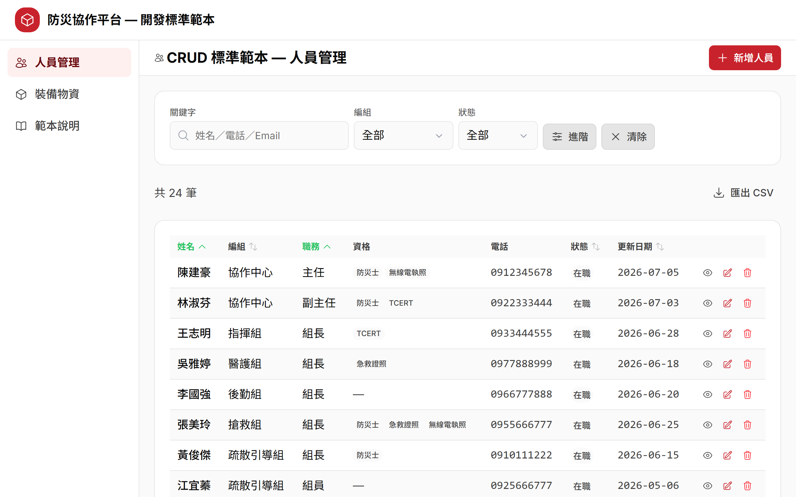
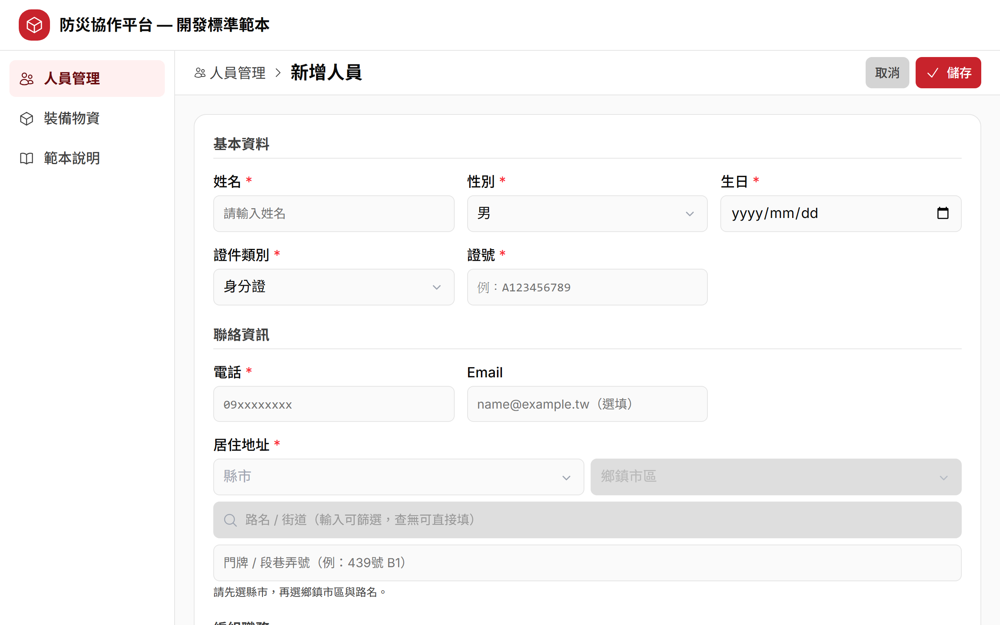
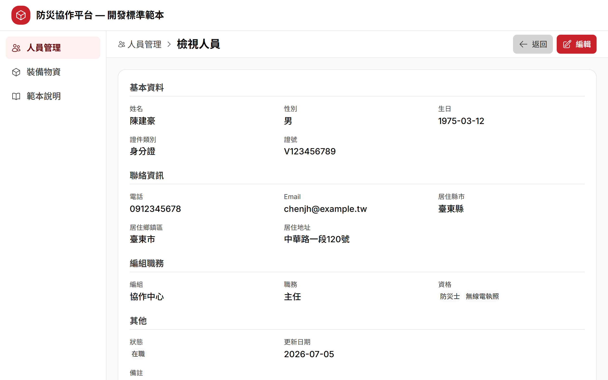
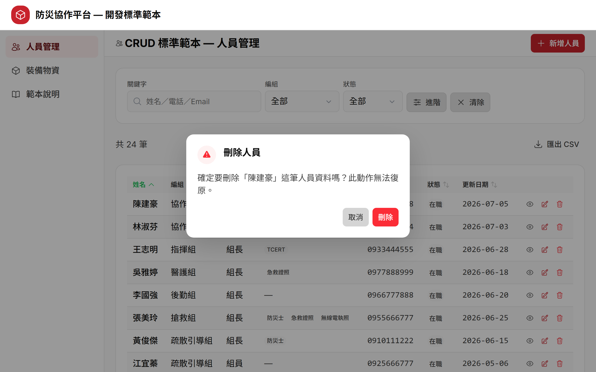
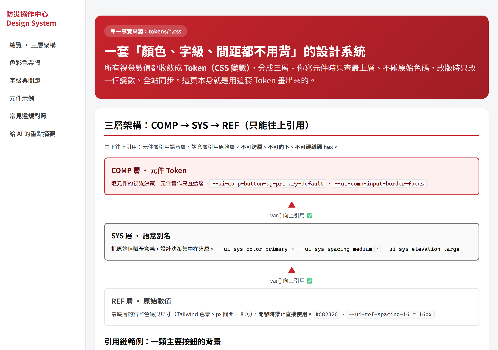
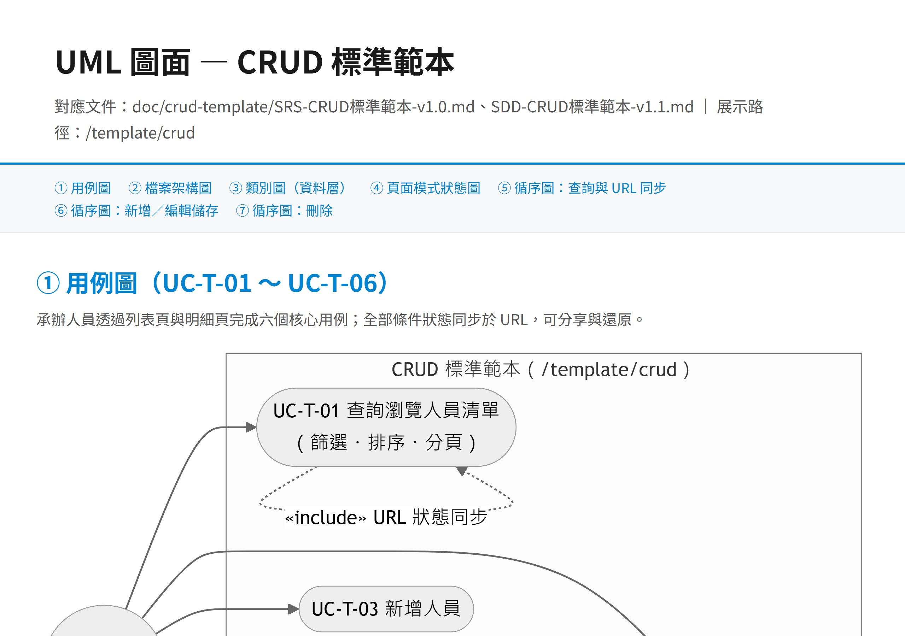
| 操作 | 你應該看到 |
|---|---|
| 新增人員 → 儲存 | 成功 toast，列表出現新增那筆 |
| 進檢視頁 → 編輯 → 儲存 | 值更新，回列表反映變更 |
| 垃圾桶 → 二次確認 | 鈕寫「刪除人員」，按下才刪 |
| 打「陳」＋狀態篩選 → 複製網址開新分頁 | 表格即時過濾，新分頁完整還原篩選與排序 |
| 匯出 CSV | 匯出的是篩選＋排序後的全量，非只當頁 |
CLAUDE.md 是專案憲法，AI 每次對話自動讀，不會亂換套件、不硬編碼顏色。AI 出勞力：改欄位、改文案這種重複勞動交給 AI，你只負責決策與驗收。三者湊齊，一個全新 CRUD 模組半小時就能長出符合規範、可跑的骨架。
複製範本開發新模組重頭戲
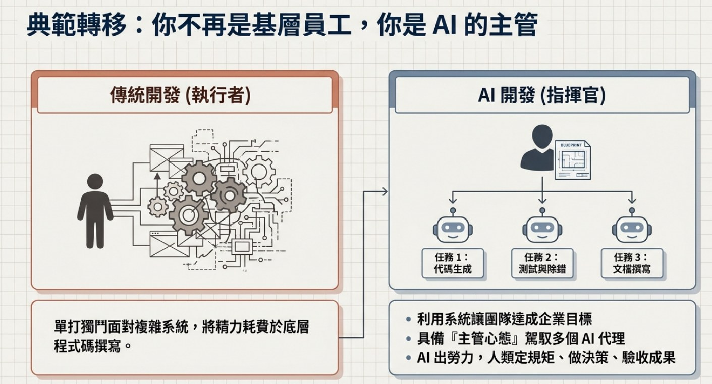
- 讀懂 PRD，理解「PRD 給全貌，不是這堂課的範圍」。
- 把需求丟給 AI，讓它先出選擇題釐清範圍，你拍板。
- 打開瀏覽器驗收與修正，重現列表、表單、驗證、刪除、手機五件事。
要長出的新模組是中心裝備物資（跑在 /equipment/crud），用的是跟 step2 同一套範本＋harness。
⓪ 準備工作區
動手之前，先把範本複製成自己的工作專案，並確認 AI Agent 的工作目錄就是這個專案根目錄（不然 AI 讀不到題目文件與 harness）。
# Windows（PowerShell）｜在工作坊根目錄執行：複製範本成你的工作專案
# ⚠ 一定要排除這三個資料夾：node_modules 會讓複製變慢甚至直接失敗（Windows 路徑太深），
# .nuxt / .output 是舊的建置快取，帶過去會讓新專案一開就 500。三個都會由 pnpm install / pnpm dev 自動重建。
$src = "step2_speedrun_kit\2.1_sample_app\sample-app"
$dst = "step3_new_module\my-equipment-app"
robocopy $src $dst /E /XD node_modules .nuxt .output | Out-Null
# 只把 PRD 放進專案（AI 才讀得到需求）
Copy-Item step3_new_module\PRD-中心裝備物資.md step3_new_module\my-equipment-app\
cd step3_new_module\my-equipment-app
pnpm install
# 在「這個資料夾」開 AI Agent（工作目錄＝專案根目錄）# macOS／Linux（終端機）｜在工作坊根目錄執行：複製範本成你的工作專案
# ⚠ 同樣要排除 node_modules / .nuxt / .output（都會自動重建）
rsync -a --exclude node_modules --exclude .nuxt --exclude .output step2_speedrun_kit/2.1_sample_app/sample-app/ step3_new_module/my-equipment-app/
# 只把 PRD 放進專案（AI 才讀得到需求）
cp step3_new_module/PRD-中心裝備物資.md step3_new_module/my-equipment-app/
cd step3_new_module/my-equipment-app
pnpm install
# 在「這個資料夾」開 AI Agent（工作目錄＝專案根目錄）🚑 一開頁就 500、錯誤訊息寫useColorMode is not defined？不是你的程式壞了，是舊的建置快取被複製過來了。關掉 dev server，把你這個工作專案（my-equipment-app）裡的.nuxt和.output兩個資料夾刪掉，再pnpm dev就好——它們是產物，砍了會自動重生。注意：刪的是你的工作專案，不要去刪2.1_sample_app/sample-app的。（上面的複製指令已經排除這兩個資料夾，正常不會遇到；這裡留著是為了萬一。）
① 讀 PRD
打開 PRD-中心裝備物資.md。題目取材自真實災防平台的頁面（原系統 26 欄＋借用歸還＋維保提醒，課堂上絕對做不完），已先濃縮成一堂課做得完的課堂版（12 欄）——但刻意留了三個決策點（刪除補不補、匯出做不做、編碼規則簡不簡化）給你拍板，連「原系統沒有刪除功能」這種真實缺口都照實保留。
② 貼起手 prompt，讓 AI 先問問題
用 Agent 模式跟 AI 對話（它需要能自己讀檔、改檔）。整段複製貼上：
你是本專案的前端工程師，我們要用現成的 CRUD 標準範本開發新模組「中心裝備物資」。
先依序讀完專案根目錄這四份，讀完再動作：CLAUDE.md、CODE-RULES-ui-本專案.md、
使用說明-複製範本開發新模組.md、PRD-中心裝備物資.md。
讀完先不要寫程式。針對 PRD 第 5 節的三個待決策點（D1 刪除、D2 匯出、D3 編碼規則），
用選擇題逐題問我：每題 2 到 4 個選項，標出你建議哪個並附一句理由。
我逐題拍板後，你再列任務清單（約 8 個，每個小到可單獨驗收），停下等我說「開工」。
開工後全程遵守剛剛讀的那四份規則，每完成一個任務回報一行進度，不要把程式碼整段倒出來。流程一句話記：貼 prompt → AI 問 → 你答 → AI 列任務 → 你確認 → AI 逐項做並回報。
③ 一題一題拍板
AI 會問三題（對應 PRD 第 5 節的三個決策點），逐題拍板（可直接採納建議選項）：
| # | AI 會問 | 課堂拍板 |
|---|---|---|
| D1 | 原系統沒有刪除功能，補嗎？ | 補硬刪除＋確認彈窗（CRUD 要有 D） |
| D2 | 匯出是 TODO 空實作，做不做？ | 做 CSV 匯出（範本現成工具，成本趨近零） |
| D3 | 編碼規則？ | 簡化版（不含機關前綴、不做同碼累加數量） |
三題不用背。重點是理解：每題都是在「真實系統」和「課堂」之間做取捨，做取捨的人是你，不是 AI。
如果 AI 沒問就直接開始寫程式，別讓它跑——貼這段救援 prompt 打斷它：
停，先不要寫程式、不要建任何檔案。
請先針對 PRD 第 5 節的三個待決策點，用選擇題逐題問我（每題 2-4 個選項＋你的建議）。
我拍板後你再列任務清單，等我確認才開工。④ 確認任務清單、說「開工」
AI 會產出約 8 個小到能單獨驗收的任務（T1 資料模型與 mock、T2 複製改名五檔、T3 列表頁、T4 表單頁、T5 連動下拉與編碼、T6 刪除＋CSV、T7 SRS/SDD、T8 自測）。順序合理就回「開工」；覺得少了什麼先補一句再放行。
T7 的 SRS／SDD 不要用「有兩個檔就打勾」驗收。打開 step3_new_module/SRS-SDD-最小樣板.md——那份把最低門檻定死成四段：SRS 要有已拍板決策、需求追溯、範圍外、待定與風險；SDD 要有檔案責任、資料模型、關鍵決策實作、harness 證據。缺一段就退回去補。裡面也用白話解釋了 SRS／SDD 這兩個縮寫對不寫程式的人到底是什麼、你只要親自核哪幾段。
⑤ 驗收與修正
確認 dev server 在跑（port 3100），打開 http://localhost:3100/equipment/crud，拿 step3_new_module/PRD-中心裝備物資.md 第 2 節的 12 欄規格逐項對照——每一欄檢查四件事：label 文字、必不必填、用哪種元件、驗證規則。
AI 做完後，用這張表核對它有沒有照「複製 vs 共用」的心法做。判斷準則就一句：跟實體長相有關的 → 複製改名；通用機制 → 直接共用。這正是 step2 ③ 那張 8 核心檔表實際套用的樣子。
| 範本檔 | 新模組檔 | 處置 |
|---|---|---|
pages/template/crud/index.vue | pages/equipment/crud/index.vue | 複製改名 |
pages/template/crud/[id].vue | pages/equipment/crud/[id].vue | 複製改名 |
composables/useTemplateMembers.ts | composables/useEquipmentItems.ts | 複製改名 |
components/template/TemplateFormField.vue | components/equipment/EquipmentFormField.vue | 複製改名 |
components/template/TemplateStatusBadge.vue | components/equipment/EquipmentStatusBadge.vue | 複製改名 |
composables/useTemplateListPage.ts | — | 直接共用，不動 |
utils/templateValidation.ts | — | 直接共用，不動 |
utils/templateCsv.ts | — | 直接共用，不動 |
AI 另外會交出 SRS／SDD（對照你的拍板有沒有漏）和 24 筆 mock 種子。種子的欄位名就是未來接後端 API 的介面，驗收時順手看一眼命名合不合理。
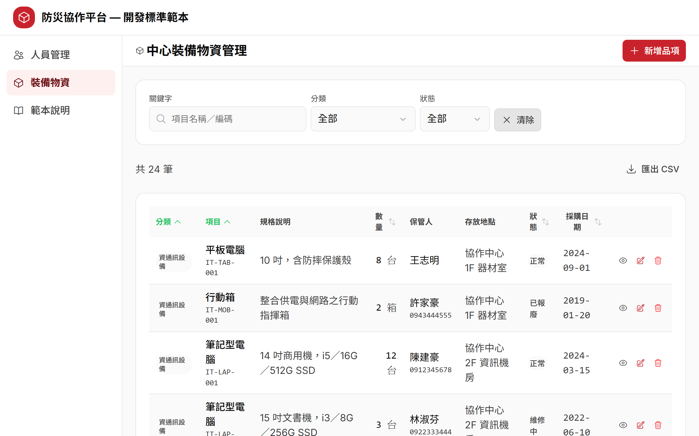
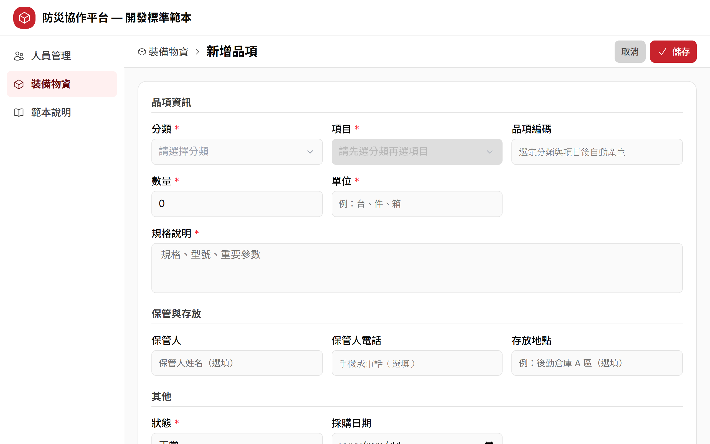
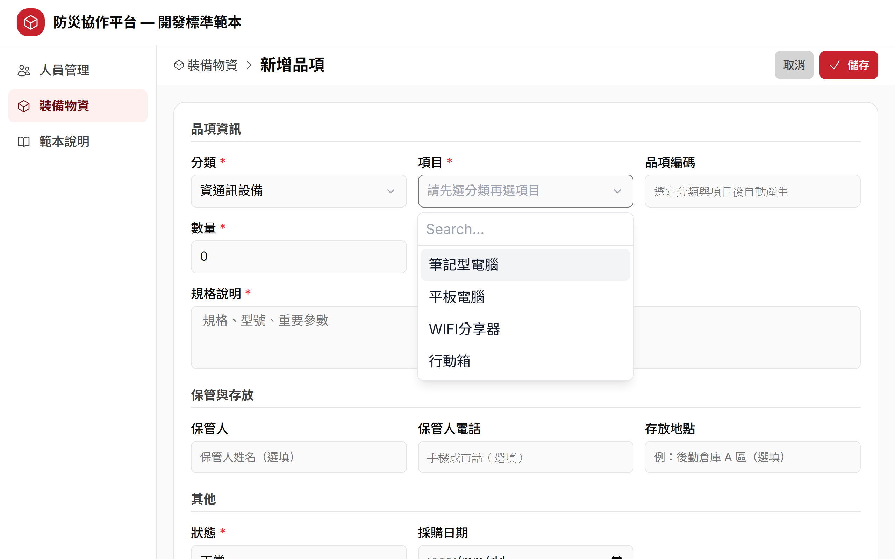
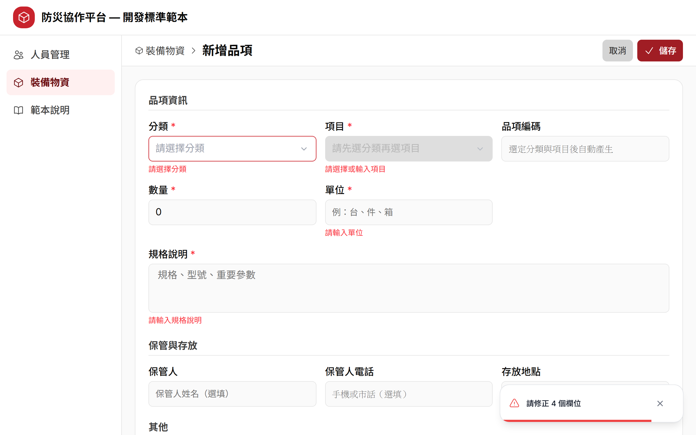
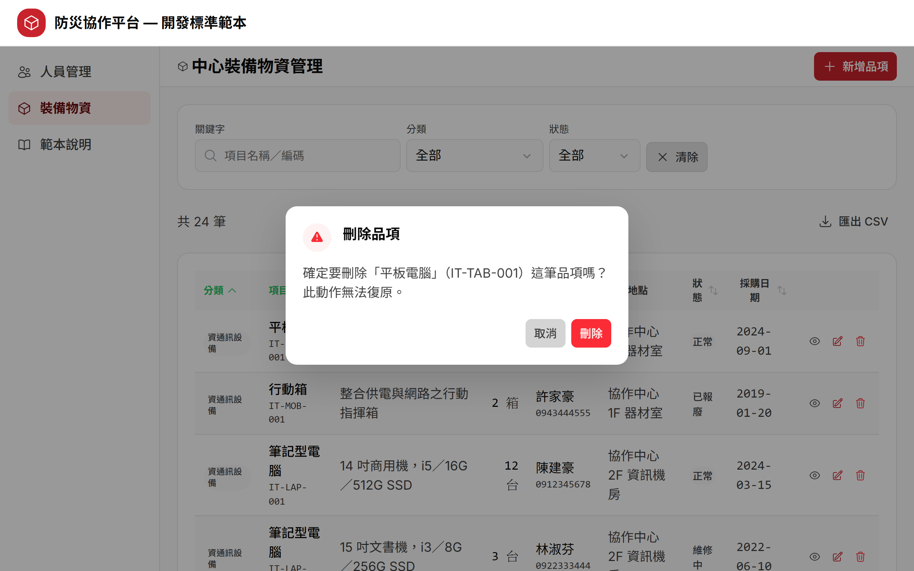
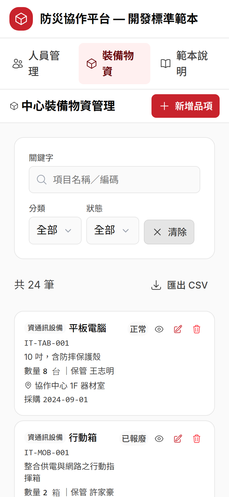
| 驗收點 | 期望 |
|---|---|
| 列表 | 桌機表格、每頁 20 筆、「分類→項目」升冪、顯示總筆數 |
| 連動下拉 | 先選分類，項目才可選，只出現該分類項目 |
| 新增 | 選定分類＋項目後標題即時顯示編碼；必填未填仍可按儲存，會顯示欄位紅字並 toast 提示「請修正 N 個欄位」 |
| 刪除 | 垃圾桶 → 二次確認 → 才刪 |
| CSV 匯出 | 匯出全量（非當頁），含 BOM 中文不亂碼 |
修正心法（三條）：
| 心法 | 怎麼做 |
|---|---|
| 一次只修一個問題 | 一則訊息只提一件事，改完再看下一件 |
| 描述「看到什麼 vs 期望什麼」 | 「我看到日期是 2026/7/1，期望顯示成 2026-07-01」 |
| 兩次修不好就重新描述 | 換個說法重講一次，別繼續在同一串盧 |
qty、unit、keeper、status…）就是未來接後端 API 的介面，現在定好之後不再改，所以驗收時順手看一眼命名合不合理。卡住時 solution-app/ 有參考解，但先自己做、真的卡兩次以上再看——直接抄答案學不到「怎麼提需求、怎麼驗收」，那才是這堂課的重點。
LOOP 工程 × E2E 驗證
- 說得出 LOOP 是什麼、優點與限制是什麼。
- 貼一個 prompt，讓 AI 把你自己在 step3 生成的模組修到 E2E 全綠。
- 驗收 AI 交回的報告，記住兩條鐵律：兩次停損、不准作弊。
一句話：先給 AI 一個「可自動執行、會給出綠/紅」的驗證，再叫它自己修到綠。
| 沒有 LOOP（人在迴圈裡） | 有 LOOP（AI 在迴圈裡） |
|---|---|
| AI 改一版 → 人手動開瀏覽器點一點 → 回報哪裡壞 → AI 再改 | AI 改一版 → 自己跑 E2E → 看到紅 → 自己修 → 再跑 → 綠了才停 |
| 人是瓶頸，改 5 次就累了 | 人只看最後結果，AI 跑幾輪都不喊累 |
關鍵前提：要先有可自動執行的驗證（本課是 7 條 Playwright E2E，exit 0＝全綠、1＝有紅）。沒有這個，LOOP 就退化成 AI 自說自話。
流程圖（一圈 LOOP 怎麼轉）：
架構圖（誰呼叫誰）：
優點與限制：
| 優點 | 說明 |
|---|---|
| 省人機來回 | 人只出一個 prompt＋一次驗收，中間 N 輪紅綠都是 AI 自己跑 |
| 不喊累、可重複 | 跑 10 輪成本幾乎等於 1 輪；每輪判定標準完全一致 |
| 品質由驗證把關 | 過不過由紅綠燈說了算，不是 AI 的自我感覺 |
| 結果可追溯 | 每輪紅了什麼、修了什麼都留在報告裡 |
| 限制／風險 | 對策（本課做法） |
|---|---|
| AI 會作弊（放寬斷言、跳測試） | prompt 鐵律禁止動測試；驗收時 git diff 抽查 e2e 資料夾 |
| AI 會鬼打牆（愈修愈亂） | 兩次停損：同一問題連修 2 次仍紅就停下回報 |
| 驗證寫得爛＝假綠也全過 | 換第二個 AI 對抗審查測試本身 |
| 沒有自動驗證的東西不適用 | 先寫驗證再開 LOOP；驗不了的（如視覺美感）回歸人工審 |
你只做兩件事：貼 prompt、驗收報告。 紅燈不用刻意製造——你在 step3 用自己的 AI 模型生成的 my-equipment-app，本來就會跟驗收規格有落差，一跑 E2E 自然就紅；這 7 條測試就是可執行的驗收規格。
在工作坊根目錄開 AI Agent，整段複製貼上：
你是 LOOP 工程師，接下來自己跑完，中途不要問我。
受測 App：step3_new_module/my-equipment-app。
紅綠燈指令：Windows 跑 powershell -ExecutionPolicy Bypass -File step4_loop_e2e/run-e2e.ps1，
macOS/Linux 跑 bash step4_loop_e2e/run-e2e.sh。exit 0＝全綠、exit 1＝有紅。
先確認 http://localhost:3100 跑的是受測 App（沒開就自己在背景啟動；3100 被別的程式佔用就停下回報），
再跑驗證、逐條判因、修完重跑，直到 7 條全綠。
鐵律：
- 同一個問題連續修兩次還沒好，停下來回報，不要無限撞牆。
- 不准放寬斷言、跳過測試、改測試預期條數；測試本身有問題就停下回報，等我裁決。
- 每次修改都要指出它對應 PRD 的哪一條或我拍板的哪一個決策；找不到出處的照樣可以改，
但要在報告裡標成「規格外調整」，並寫一句它跟 PRD 的差異在哪。
- 不准為了過測把「直接共用」的零件（useTemplateListPage / templateValidation /
templateCsv / App*.vue）拆掉重寫一套；用不動就停下回報。
報告：每一輪紅了哪幾條、一句話根因、修了哪個檔；最後附全綠總結行（7 passed）。先分清楚兩種紅，處置完全不同：
| 你看到的狀況 | 這是什麼 | 你要做的 |
|---|---|---|
| E1～E7 有幾條 fail | 正常，這就是 LOOP 存在的目的 | 別插手，讓 AI 自己修 → 再跑 |
| 腳本根本沒開始跑測試就掛了（Playwright 瀏覽器下載失敗、連不上 3100、PowerShell 擋住執行） | 環境問題，不是 LOOP 的活 | 整段輸出貼給 AI 排除，同 step0 那一套 |
| AI 回報「這一條在驗 PRD 沒寫的東西」（例如 toast 文案、編碼格式、HTML id） | 這是真的，不是藉口——這 7 條是照參考解寫的 | 你決定：(A) 叫它改 App 對齊測試（可以，但要在報告裡標成「規格外調整」）；(B) 就讓它紅著，把衝突寫進報告。選 (B) 也算完成這一步。 |
| AI 自己停下來回報（觸發兩次停損） | 制度設計如此，代表該人介入了 | 看它的根因說法：該修 App 就叫它修；它說「測試有問題」要你點頭才准動 |
後兩種都可以直接把完整輸出交給 AI，用這個 prompt：
工作坊 step4 的 E2E 腳本還沒開始跑測試就失敗了，完整輸出如下，我用 Windows 11。
請判斷是環境問題還是測試問題、給我可複製的修復指令，修完帶我重跑一次。
不准改 step4_loop_e2e/e2e 底下的測試檔，也不准放寬斷言或跳過測試；測試真有問題只准告訴我理由，由我裁決。
（從你輸入指令那一行開始整段貼上）AI 交回一份報告，照這張表核：
| 檢查點 | 怎麼核 |
|---|---|
| 每輪紀錄完整 | 紅了哪幾條、根因、修了哪個檔，一輪一列 |
| 根因說得通 | 「App 不符規格」就該修 App；說「測試有問題」的要有你的裁決紀錄 |
| 測試沒被動過 | 在 step4_loop_e2e/ 跑 git diff e2e/，應該是空的。如果你拿到的是資料夾／zip 副本（不是 git clone），這條會印 Not a git repository——那不是你做錯了。改用雜湊比對：Get-FileHash e2e\tests\equipment.spec.ts（Windows）／shasum -a 256 e2e/tests/equipment.spec.ts（Mac），跟講師發的原始雜湊對一次 |
| 共用件還在用嗎（新增） | LOOP 為了過測，很容易把「直接共用」的零件拆掉、自己重寫一套——共用檔本身沒被改，所以上面那條抽查抓不到。 在 my-equipment-app 跑 Select-String -Path pages\equipment\crud\index.vue -Pattern "useTemplateListPage"（Mac：grep -n useTemplateListPage pages/equipment/crud/index.vue），應該要找得到。找不到就代表 step2 的「複製 vs 共用」心法在這一步被放棄了 |
| 最終真的綠 | 報告附 7 passed、exit 0 的總結行。若因為 (2) 類規格衝突而停在紅燈，報告要寫明停在哪一條、為什麼 |
對抗審查（強烈建議做，別當選配）。寫測試或修 App 的 AI 不適合審自己。開第二個 AI（例如本機 Codex），貼這段，它挑出的問題交回原 AI 修 → 再跑 → 再審：
你的任務是「盡力推翻」step4_loop_e2e/e2e 這套 E2E 測試，不是誇獎它。專找三種問題：
假綠（斷言太鬆、選到隱藏節點、等到的是別的元素）、猜的 selector（靠 nth 這種一改版就碎的寫法）、
測試互相污染（前一條的資料影響後一條）。
逐條給可被推翻的具體理由，能重現就附步驟；找不到問題也要說明你怎麼確認的。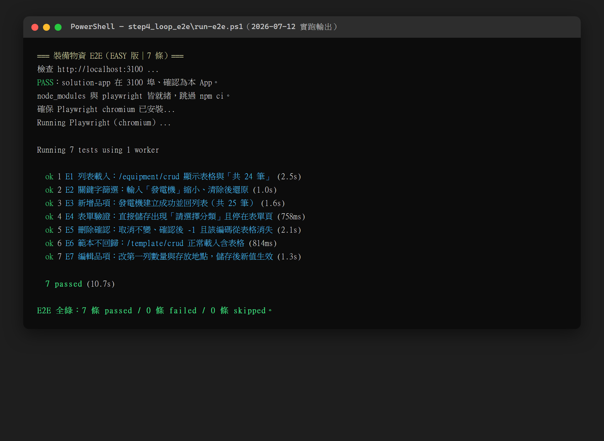
| 編號 | 驗什麼 | CRUD 觀念 |
|---|---|---|
| E1 | /equipment/crud 看得到表格、種子 24 筆、第一頁恰好 20 列 | Read |
| E2 | 用編碼搜尋剩 1 筆、大小寫不影響、用品名搜尋會縮小、清除後回到原本筆數 | Filter |
| E3 | new → 選分類→項目→編碼「即時算出且不重複」（格式不限）→ 儲存 → 筆數 +1 | Create |
| E4 | 空表單儲存 → 四個必填各自紅字、不離頁；再清空／填負數，逐欄驗到 5 個必填；狀態沒有清空入口，改驗「選項只有三個合法值、沒有清除鈕」（進不了空值） | Validation |
| E5 | 刪除 → 確認框 → 取消不變、確認 -1 | Delete |
| E6 | /template/crud 正常載入，而且點得進人員檢視頁看到資料 | Regression（沒改壞範本） |
| E7 | 編輯品項：改數量與存放地點，儲存後新值生效 | Update |
課程總結與回去怎麼用
- 收攏四個 step 各帶走一個觀念。
- 知道回公司落地的三個步驟。
課程回顧：
| Step | 帶走的觀念 |
|---|---|
| step1 | 同一句需求，有沒有附「規矩」（harness），產出天差地遠——差的不是功能，是像不像同一個團隊做的。 |
| step2 | 一個成熟模組＝範本（骨架）＋系統文件＋harness 四件＋Design System，缺一塊 AI 就會自由發揮出風險。 |
| step3 | 正確順序是 PRD → AI 提「釐清選擇題」→ 生成 SRS/SDD → 生成程式與假資料 → 人工反覆修正；AI 主動提問代表 harness 在運作。 |
| step4 | 可以讓 AI 自己跑「改→驗→再改」，但收尾一定要有人或另一個 AI 用 E2E 功能驗證＋失敗截圖診斷、對抗審查把關。 |
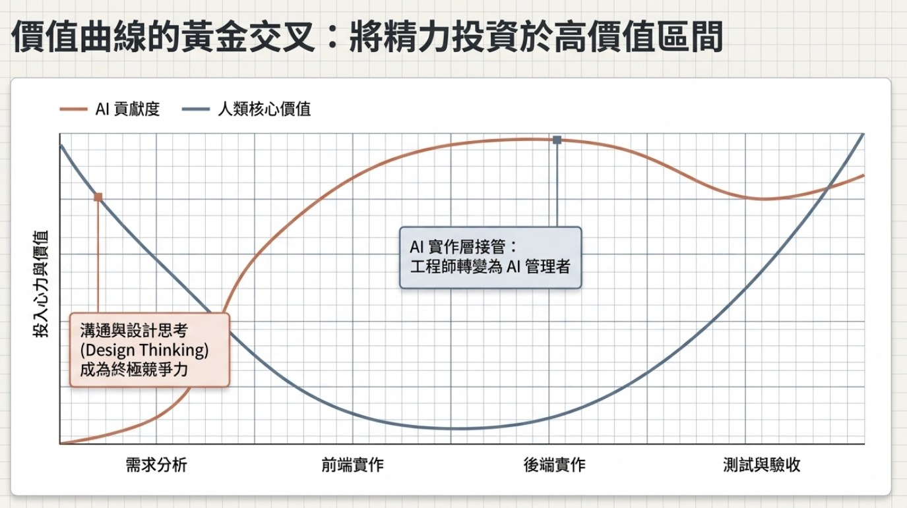
回去怎麼用（三步驟）：
- 把前端 harness 四件帶進你的專案——把
CLAUDE.md、CODE-RULES-ui-本專案.md、design-system-summary.md、使用說明-複製範本開發新模組.md複製到你專案根目錄，內容改成你們公司的規則（色票、命名、驗證、禁止事項）。 - 把既有標準頁面整理成範本——挑一個最成熟的 CRUD 頁面，拆成「複製區」（跟實體有關的型別、欄位、驗證）與「共用區」（跟實體無關的通用邏輯）。
- 新需求走完整流程——PRD → 釐清選擇題 → SRS/SDD → 生成 → LOOP 驗證。拿到新需求先寫一頁 PRD（可以很簡陋），丟給 AI 配上 harness 與範本。
課後驗收題：一個人做一個問卷模組並發布上線，題目與步驟在 step6_survey/README.md。
完課檢核表
全部打勾，代表你真的走完了：
- 前置檢查（
preflight.ps1／preflight.sh）全數通過 - 說得出兩版「顏色從哪來、業務規則從哪來」的差別，以及 harness 管不到「做多少」
- 範本人員 CRUD 在本機跑起來（port 3100），五個檢查點都重現
- 看過 Design System 與前端 harness 四件，知道顏色／間距走 token
- 讀懂課堂版 PRD，知道三個決策點是拿「真實系統」換「課堂」的取捨
- 貼起手 prompt，AI 有先出釐清選擇題（不是直接寫程式）
- 三個決策點逐題拍板，確認任務清單後才說「開工」
- 裝備物資模組驗收：列表、連動下拉、新增編碼、刪除確認、手機卡片都重現
- 貼一個 LOOP prompt，AI 把你的 my-equipment-app 修到 E2E 7 條全綠
- 驗收 AI 的報告（每輪紅了什麼／根因／修了哪個檔＋全綠總結行）＋抽查測試沒被動（
git diff e2e/；不是 git 副本就改用檔案雜湊比對） - 抽查共用件還在用：
my-equipment-app的列表頁仍然 importuseTemplateListPage，沒有為了過測被拆掉重寫 - 說得出 LOOP 是什麼、一個優點一個限制，以及「兩次停損」「不准作弊」兩條鐵律